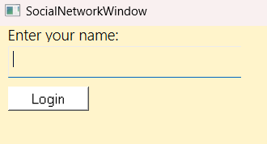
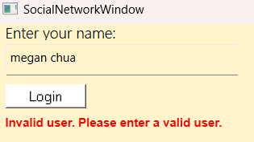
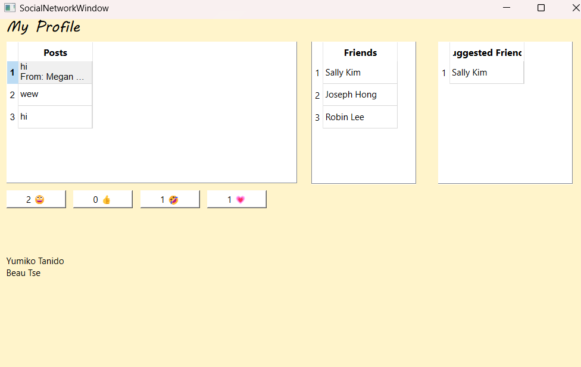

social network
Full Stack Project
toolkit
Programming Language: C++
Additional Tools: QT
the project
As can be deduced from the title, this project is an attempt at trying to create a social networking app. It uses a graph implementation to connect users, which are nodes within the graph. The connections between nodes in the graph are users who are "friends." Additional implementation includes only allowing for valid users to login, suggestions for friends, posting functionality. The posts can also be reacted to, with a list of who reacted, as well as what they reacted.
Since this was my first time working on such a large project on my own, I found it quite a challenge to debug, as it was often difficult for me to pinpoint exactly where the error was coming from. Creating the UI for the first time using QT was more enjoyable than I anticipated, which was a pleasant surprise. Given, it was a bit of a challenge, but overall an enjoyable project.
gallery



+ back to projects +